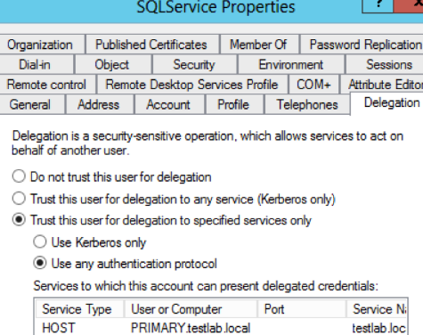

Constrained Delegation
Obviously unconstrained delegation can be quite dangerous in the hands of a careless admin. Microsoft realized this early on and released ‘constrained’ delegation with Windows 2003. This included a set of Kerberos protocol extensions called S4U2Self and S4U2Proxy. These extensions also enable something called protocol transition, which we’ll go over in a bit.
In essence, constrained delegation is a way to limit exactly what services a particular machine/account can access while impersonating other users. Here’s how a service account configured with constrained delegation looks in the Active Directory GUI:

The ‘service’ specified is a service principal name that the account is allowed to access while impersonating other users. This is HOST/PRIMARY.testlab.local in our above example. Before we get into the specifics of how this works, here’s how that target object looks in PowerView:

The field of interest is msds-allowedtodelegateto, but there’s also a modification to the account’s userAccountControl property. Essentially, if a computer/user object has a userAccountControl value containing TRUSTED_TO_AUTH_FOR_DELEGATION then anyone who compromises that account can impersonate any user to the SPNs set in msds-allowedtodelegateto. Ben mentions SeEnableDelegationPrivilege being required to actually modify these parameters.